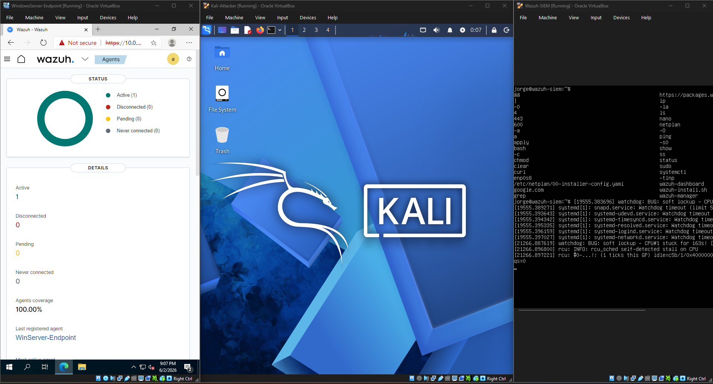

Blog
Project Writeups
Notes from labs and projects — detection engineering first.
Featured
Adversary Simulation & Detection Lab
A full kill chain simulation across three VMs, with custom Wazuh detection rules, an incident report, and a gap analysis of what the default rules missed.

Archive